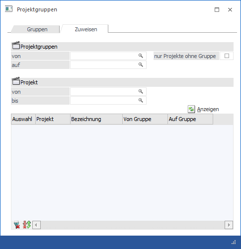
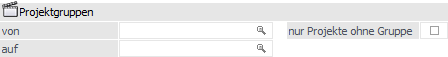
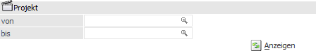
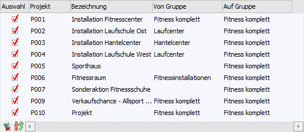
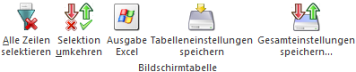

Mit Hilfe des Registers "Zuweisen" können angelegte bzw. geänderte Projektgruppen den Verkaufschancen bzw. den Projekten zugeordnet werden.

Projektgruppen

Zuerst muss definiert werden, von welcher Projektgruppe auf welche Projektgruppe die Umstellung bzw. Zuweisung erfolgen soll.
Ø Projektgruppe von
An dieser Stelle wird die Gruppe eingegeben, welche als Ausgangsbasis dienen soll (d.h. damit kann eingeschränkt werden, dass nur die Projekte umgestellt werden sollen, die bereits eine bestimmte Projektgruppe hinterlegt haben).
Wird in diesem Feld kein Wert eingetragen, dann werden alle Verkaufschancen / Projekte zur Umstellung vorgeschlagen.
Ø Projektgruppe auf
Hier wird die Gruppe eingegeben, auf welche die Verkaufschancen / Projekte umgestellt werden sollen.
Ø nur Projekte ohne Gruppe
Wenn diese Option aktiviert wird, dann kann das Feld "von" nicht mehr bearbeitet werden und es werden in weiterer Folge nur die Verkaufschancen / Projekte angezeigt, denen noch keine Projektgruppe zugeordnet wurde.
Projekt

Ø Von / bis
Hier kann eine Selektion der Verkaufschancen bzw. Projekte vorgenommen werden, für welche die Projektgruppen vergeben werden sollen.
Ø Anzeigen
Durch Anklicken des Buttons "Anzeigen" wird die nachstehende Tabelle anhand der vorgenommen Einstellungen gefüllt.
Tabelle

Folgende Informationen sind in der Tabelle ersichtlich:
Ø Auswahl
Über die Option "Auswahl" kann entschieden werden, ob die Verkaufschance bzw. das Projekt auf die neue Gruppe umgestellt werden soll oder nicht. Standardmäßig wird die Option immer gesetzt, kann aber bei Bedarf übersteuert werden.
Ø Projekt / Bezeichnung
Hier wird die Projektnummer und die Bezeichnung der Verkaufschance / des Projekts angezeigt, welche(s) umgestellt werden soll.
Ø Von Gruppe
Hier wird die Gruppe angezeigt, die derzeit bei der Verkaufschance / dem Projekt hinterlegt ist.
Ø Auf Gruppe
Hier wird die neue Gruppe angezeigt, auf welche die Verkaufschance / das Projekt umgestellt wird.
Tabellenbuttons

Ø Alle Zeilen selektieren
Mit diesem Button werden alle Datensätze in der Tabelle markiert.
Ø Selektion umkehren
Durch Anklicken des Umkehr-Buttons kann die Selektion in das Gegenteil gekehrt werden.
Ø Ausgabe Excel
Durch Anwahl des Buttons "Ausgabe Excel" wird der Inhalt der Tabelle nach Microsoft Excel übergeben.
Ø Tabelleneinstellungen speichern
Die Spalten einer Tabelle können grundsätzlich an beliebige Positionen verschoben, bzw. in der Breite entsprechend angepasst werden. Durch Anwahl des Buttons "Tabelleneinstellungen speichern" werden die Einstellungen benutzerspezifisch gespeichert und bei dem nächsten Aufruf des Programmpunktes wieder vorgeschlagen.
Ø Gesamteinstellungen speichern
Im Gegensatz zu "Tabelleneinstellungen speichern" können mit "Gesamteinstellungen speichern" mehrere Tabellenaufbauten gespeichert und nach Wunsch geladen werden. Zusätzlich werden Sonderfunktionen der Tabelle (z.B. "Spalte gruppieren") ebenfalls bei der Speicherung bedacht.